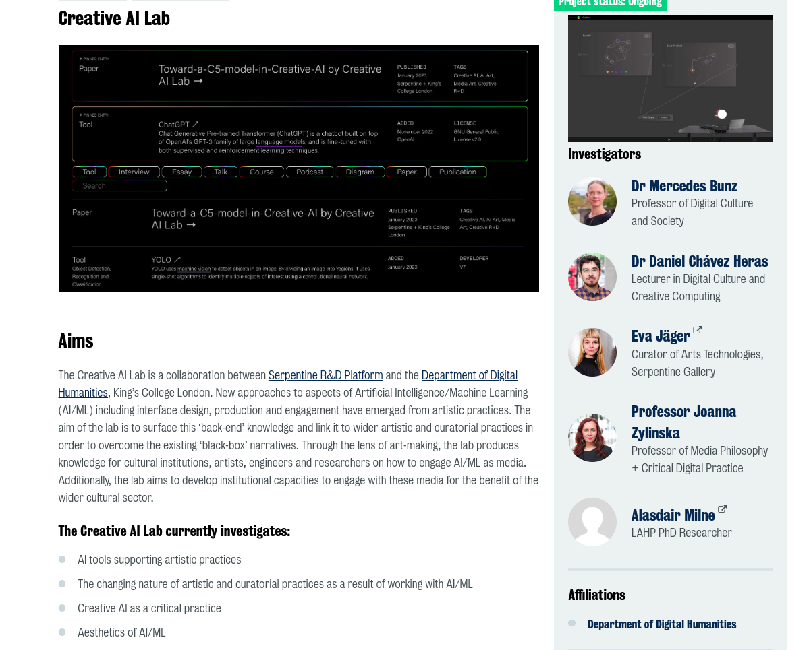
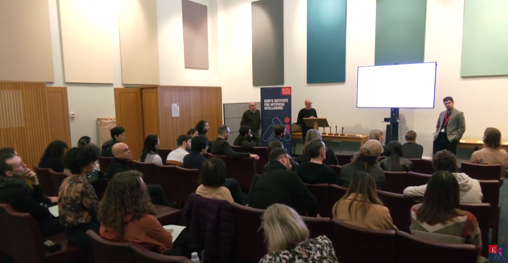
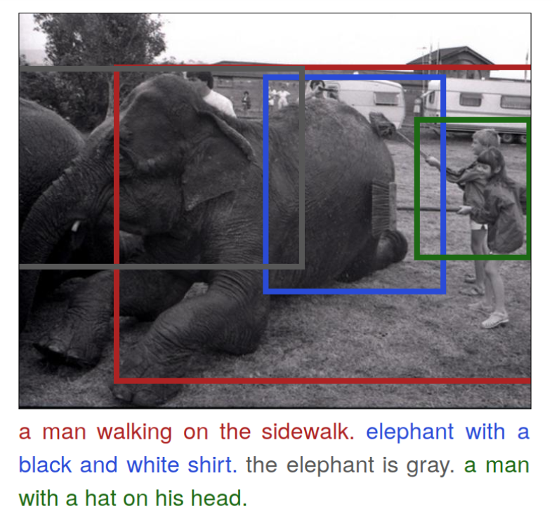

<!DOCTYPE html>
<html lang="en">
  <head>
    <meta charset="utf-8" />
    <meta name="viewport" content="width=device-width, initial-scale=1.0, maximum-scale=1.0, user-scalable=no" />

    <title>EINA conference</title>
    <link rel="stylesheet" href="dist/reveal.css" />
    <link rel="stylesheet" href="dist/theme/moon.css" id="theme" />
    <link rel="stylesheet" href="plugin/highlight/zenburn.css" />
	<link rel="stylesheet" href="css/layout.css" />
	<link rel="stylesheet" href="plugin/customcontrols/style.css">
	<link rel="stylesheet" href="plugin/chalkboard/style.css">

	<link rel="stylesheet" href="plugin/reveal-pointer/pointer.css" />


    <script defer src="dist/fontawesome/all.min.js"></script>

	<script type="text/javascript">
		var forgetPop = true;
		function onPopState(event) {
			if(forgetPop){
				forgetPop = false;
			} else {
				parent.postMessage(event.target.location.href, "app://obsidian.md");
			}
        }
		window.onpopstate = onPopState;
		window.onmessage = event => {
			if(event.data == "reload"){
				window.document.location.reload();
			}
			forgetPop = true;
		}

		function fitElements(){
			const itemsToFit = document.getElementsByClassName('fitText');
			for (const item in itemsToFit) {
				if (Object.hasOwnProperty.call(itemsToFit, item)) {
					var element = itemsToFit[item];
					fitElement(element,1, 1000);
					element.classList.remove('fitText');
				}
			}
		}

		function fitElement(element, start, end){

			let size = (end + start) / 2;
			element.style.fontSize = `${size}px`;

			if(Math.abs(start - end) < 1){
				while(element.scrollHeight > element.offsetHeight){
					size--;
					element.style.fontSize = `${size}px`;
				}
				return;
			}

			if(element.scrollHeight > element.offsetHeight){
				fitElement(element, start, size);
			} else {
				fitElement(element, size, end);
			}		
		}


		document.onreadystatechange = () => {
			fitElements();
			if (document.readyState === 'complete') {
				if (window.location.href.indexOf("?export") != -1){
					parent.postMessage(event.target.location.href, "app://obsidian.md");
				}
				if (window.location.href.indexOf("print-pdf") != -1){
					let stateCheck = setInterval(() => {
						clearInterval(stateCheck);
						window.print();
					}, 250);
				}
			}
	};


        </script>
  </head>
  <body>
    <div class="reveal">
      <div class="slides"><section  data-markdown><script type="text/template"></script></section><section  data-markdown><script type="text/template"><!-- .slide: class="drop" -->
<div class="" style="position: absolute; left: 0px; top: 0px; height: 1200px; width: 1920px; min-height: 1200px; display: flex; flex-direction: column; align-items: center; justify-content: center" absolute="true">


</div></script></section><section  data-markdown><script type="text/template"><!-- .slide: class="drop" -->
<div class="" style="position: absolute; left: 0px; top: 0px; height: 1200px; width: 1920px; min-height: 1200px; display: flex; flex-direction: column; align-items: center; justify-content: center" absolute="true">

# Bienes públicos, ganancias privadas
### _creatividad y producción digital en la era de los medios sintéticos_

Dr Daniel Chávez Heras

King's College London

[@chavezheras@sigmoid.social](https://sigmoid.social/@chavezheras)

[movingpixel.net](https://movingpixel.net/)
</div>

<aside class="notes"><p>gracias por la invitación, enctantado de estar aquí.
Programa del día --&gt; un poco sobre mi contexto y mi trabajo como parte del creative AI Lab, y profundizar en un proyecto y aspecto específico relacionado con medios sintéticos y producción creativa</p>
</aside></script></section><section  data-markdown><script type="text/template"><!-- .slide: class="drop" -->
<div class="" style="position: absolute; left: 0px; top: 0px; height: 1200px; width: 1920px; min-height: 1200px; display: flex; flex-direction: column; align-items: center; justify-content: center" absolute="true">


</div>

<aside class="notes"><p>Mi rol es Catedrático e investigador en el Departamento de Humanidades Digitales más grade en su tipo, colegas en todas las áreas clásicas de las artes y las humanidades: historia, geografía, política; arte, literatura, y en mi caso cine.</p>
</aside></script></section><section  data-markdown><script type="text/template"><!-- .slide: class="drop" -->
<div class="" style="position: absolute; left: 0px; top: 0px; height: 1200px; width: 1920px; min-height: 1200px; display: flex; flex-direction: column; align-items: center; justify-content: center" absolute="true">

## Preguntas existentes con métodos nuevos
## Preguntas nuevas con marcos teóricos existentes

- Preservación y curaduría digital
- Estándares abiertos y regímenes de datos
- Impacto social y cultural de nuevas tecnologías
</div></script></section><section  data-markdown><script type="text/template"><!-- .slide: class="drop" -->
<div class="" style="position: absolute; left: 0px; top: 0px; height: 1200px; width: 1920px; min-height: 1200px; display: flex; flex-direction: column; align-items: center; justify-content: center" absolute="true">

## Cultura Digital + Creatividad Computacional

- [Computational Humanities Research Group](https://www.kcl.ac.uk/research/computational-humanities-research-group)
- [Creative AI lab](https://creative-ai.org/)
</div>

<aside class="notes"><p>Dos grupos de investigación --&gt; especialidad en cultura digital (análisis de fenómenos culturales mediante métodos computacionales) y creatividad computacional (definiri aquí).
Mi línea de investigación vincula estas dos áreas, y se enfoca en la familia de tecnologías comúnmente conocidas como Inteligencia Artificial: su historia y naturaleza como técnica, sus aplicaciones como herramienta analítica y creativa, y sus implicaciones sociales y culturales.</p>
</aside></script></section><section  data-markdown><script type="text/template"><!-- .slide: class="drop" -->
<div class="" style="position: absolute; left: 0px; top: 0px; height: 1200px; width: 1920px; min-height: 1200px; display: flex; flex-direction: column; align-items: center; justify-content: center" absolute="true">

### [Departamento de Humanidades Digitales](https://www.kcl.ac.uk/ddh) + [Serpentine Galleries](https://www.serpentinegalleries.org/)

</div>

<aside class="notes"><p>proyecto de colaboración entre DDH y Serpentine Galleries en Londres.
Iniciado en 2019 (?) por por mis colegas: Mercedes Bunz, en King&#39;s, y Eva Jager, curadora de programas digitales en Serpentine.</p>
</aside></script></section><section  data-markdown><script type="text/template"><!-- .slide: class="drop" -->
<div class="" style="position: absolute; left: 0px; top: 0px; height: 1200px; width: 1920px; min-height: 1200px; display: flex; flex-direction: column; align-items: center; justify-content: center" absolute="true">

# [Creative AI Lab](https://creative-ai.org/)

### Espacio de colaboración y red de intercambio entre artistas, curadores y académicos

- Seminarios de investigación
- [Simposio sobre IA y creatividad](https://youtu.be/xuZsf3ZX7k8?si=c4VvoC6OhmFVSi6K)
- Publicaciones ([creative-ai.org](https://creative-ai.org/)), [podcast](https://youtu.be/ZINNQAS0ub4?si=vM2PrD_xYNCnUGKZ)
- Proyectos
</div>

<aside class="notes"><p>un esfuerzo por agregar y mapear algunas de las herramientas, tecnológicas y conceptuales relacionadas con los usos creativos y artísticos de tecnologías de IA.
Repositorio de investigación. Trabajo curatorial: Eva y Alasdair</p>
</aside></script></section><section  data-markdown><script type="text/template"><!-- .slide: class="drop" -->
<div class="" style="position: absolute; left: 0px; top: 0px; height: 1200px; width: 1920px; min-height: 1200px; display: flex; flex-direction: column; align-items: center; justify-content: center" absolute="true">


</div></script></section><section  data-markdown><script type="text/template"><!-- .slide: class="drop" -->
<div class="" style="position: absolute; left: 0px; top: 0px; height: 1200px; width: 1920px; min-height: 1200px; display: flex; flex-direction: column; align-items: center; justify-content: center" absolute="true">


</div></script></section><section  data-markdown><script type="text/template"><!-- .slide: class="drop" -->
<div class="" style="position: absolute; left: 0px; top: 0px; height: 1200px; width: 1920px; min-height: 1200px; display: flex; flex-direction: column; align-items: center; justify-content: center" absolute="true">


</div></script></section><section  data-markdown><script type="text/template"><!-- .slide: class="drop" -->
<div class="" style="position: absolute; left: 0px; top: 0px; height: 1200px; width: 1920px; min-height: 1200px; display: flex; flex-direction: column; align-items: center; justify-content: center" absolute="true">


</div></script></section><section  data-markdown><script type="text/template"><!-- .slide: class="drop" -->
<div class="" style="position: absolute; left: 0px; top: 0px; height: 1200px; width: 1920px; min-height: 1200px; display: flex; flex-direction: column; align-items: center; justify-content: center" absolute="true">

## [Public AI](https://kingsdh.net/2023/07/10/new-research-project-art-x-public-ai-2/)


</div>

<aside class="notes"><p>Serpentine y KCL son organizaciones con financiamiento público
Visión multidimensional de IA para sectores creativos.
Más allá de los derechos de autor sobre inputs (datasets) y outputs (texto o imágenes generadas), desglosamos las distintas capas de la infraestructura tecnológica: desde la capa de aplicaciones, y herramientas que ven los usuarios finales, los modelos computacionales, la infraestructura de almacenamiento y cómputo de alto rendimiento, y por supuesto la energía necesaria para mantener estos sistemas.</p>
</aside></script></section><section  data-markdown><script type="text/template"><!-- .slide: class="drop" -->
<div class="" style="position: absolute; left: 0px; top: 0px; height: 1200px; width: 1920px; min-height: 1200px; display: flex; flex-direction: column; align-items: center; justify-content: center" absolute="true">

## Transformación de los medios de producción

#### Perspectivas desde las industrias creativas


</div>

<aside class="notes"><p>imagen para el diseño de portada de este libro, hecho en 2021, publicado en 2022.
Experimentando con VQGAN, Disco Diffusion, y otros modelos para generación de imágenes guiados por CLIP (a su vez otro modelo desarrollado por Open AI).</p>
</aside></script></section><section  data-markdown><script type="text/template"><!-- .slide: class="drop" -->
<div class="" style="position: absolute; left: 0px; top: 0px; height: 1200px; width: 1920px; min-height: 1200px; display: flex; flex-direction: column; align-items: center; justify-content: center" absolute="true">

> The final image called for human **estimation, approximation, and simple guesswork. It was more work than creativity**. Producing the image additionally required infrastructure credits from Google. The book cover therefore is an expression of one of the key ideas in this book: that **we need to understand algorithmic operations and AI from the perspective of work**.

\- Tobias Blanke
</div>

<aside class="notes"><p>en los agradecimientos del libro, Tobias detalla el proceso para la generación de la imágen.</p>
</aside></script></section><section  data-markdown><script type="text/template"><!-- .slide: class="drop" -->
<div class="" style="position: absolute; left: 0px; top: 0px; height: 1200px; width: 1920px; min-height: 1200px; display: flex; flex-direction: column; align-items: center; justify-content: center" absolute="true">


</div>

<aside class="notes"><p>Para mi propio libro, Cinema and Machine Vision, próximo a publicarse con Edinburgh University Press, apenas dos años después, sugerí una portada generada con una de estas técnicas, y EUP amablemente explicaron que no era posible por temas de derechos de autor. Se sorprendieron cuando les dije que OUP ya lo había hecho!</p>
</aside></script></section><section  data-markdown><script type="text/template"><!-- .slide: class="drop" -->
<div class="" style="position: absolute; left: 0px; top: 0px; height: 1200px; width: 1920px; min-height: 1200px; display: flex; flex-direction: column; align-items: center; justify-content: center" absolute="true">

## ¿Qué sucedió?

### ¿Cómo pasamos de experimentos de garage a medios masivos a escala industrial?
</div>

<aside class="notes"><p>de un grupo de entusiastas experimentando con nuevas tecnologías que en apariencia no tenían una aplicación obvia, a empresas multimillonarias que ahora absorben otras industrias completas, como el caso de las imágenes de stock, o son objeto de  demandas, como el caso de Getty Images, o la acción colectiva de demanda por un grupo de artistas en contra de Stability AI.</p>
</aside></script></section><section  data-markdown><script type="text/template"><!-- .slide: class="drop" -->
<div class="" style="position: absolute; left: 0px; top: 0px; height: 1200px; width: 1920px; min-height: 1200px; display: flex; flex-direction: column; align-items: center; justify-content: center" absolute="true">

## Un poco de historia


</div>

<aside class="notes"><p>En realidad esto no sucedió de la noche a la mañana, la transformación en los medios de producción tiene algún tiempo gestándose, y se manifiesta ahora de manera más visible en las industrias creativas-cognitivas que habían hasta ahora permanecido más al margen de la automatización industrial.
El caso paradigmatico de ImageNet.
El ImageNet challenge en 2012 abrió la puerta para un nuevo paradigma conocido como &quot;deep learning&quot; basado en redes neuronales artificiales, paradigma que hoy domina lo que llamamos comúnmente IA.
Pero hay otras IAs!</p>
</aside></script></section><section  data-markdown><script type="text/template"><!-- .slide: class="drop" -->
<div class="" style="position: absolute; left: 0px; top: 0px; height: 1200px; width: 1920px; min-height: 1200px; display: flex; flex-direction: column; align-items: center; justify-content: center" absolute="true">

#### Flickr


</div>

<aside class="notes"><p>Philip Howard, who uploaded it to the platform in 2013 as part of a series of black and white photographs depicting the organised washing of circus elephants in the seaside town of Weymouth, in Britain, around 1987
Millones de imágenes como esta fueron recolectadas por sus descripciones &quot;tags&quot; en un ejercicio automatizado de captura. Clave para ello es que las imágenes están disponibles en línea de manera pública, pueden encontrarse y clasificarse de manera automática utilizando sus descripciones y tags, y tienen licencias de Creative Commons.</p>
</aside></script></section><section  data-markdown><script type="text/template"><!-- .slide: class="drop" -->
<div class="" style="position: absolute; left: 0px; top: 0px; height: 1200px; width: 1920px; min-height: 1200px; display: flex; flex-direction: column; align-items: center; justify-content: center" absolute="true">

#### MS Coco


</div>

<aside class="notes"><p>de ImageNet, muchas acabaron en otros datasets, como MS COCO (Common Objects in Context)</p>
</aside></script></section><section  data-markdown><script type="text/template"><!-- .slide: class="drop" -->
<div class="" style="position: absolute; left: 0px; top: 0px; height: 1200px; width: 1920px; min-height: 1200px; display: flex; flex-direction: column; align-items: center; justify-content: center" absolute="true">

#### DenseCap


</div>

<aside class="notes"><p>o DenseCap, desarrollado por Fei Fei Li para automatizar la descripción detallada de imágenes</p>
</aside></script></section><section  data-markdown><script type="text/template"><!-- .slide: class="drop" -->
<div class="" style="position: absolute; left: 0px; top: 0px; height: 1200px; width: 1920px; min-height: 1200px; display: flex; flex-direction: column; align-items: center; justify-content: center" absolute="true">

## Compartir y trabajar


</div>

<aside class="notes"><p>cuando Philip Howard anotó su fotografía, nunca consideró que esas breves anotaciones podrían ser utilizadas para entrenar Inteligencia Artificial. 
Parece trivial, porque podemos describir lo que vemos de manera instantánea, pero en realidad esta habilidad descansa en millones de años de evolución, depende por ejemplo, del desarrollo del lenguaje, y de otras tecnologías de representación, como le escritura y la fotografía</p>
</aside></script></section><section  data-markdown><script type="text/template"><!-- .slide: class="drop" -->
<div class="" style="position: absolute; left: 0px; top: 0px; height: 1200px; width: 1920px; min-height: 1200px; display: flex; flex-direction: column; align-items: center; justify-content: center" absolute="true">

## Cinco etapas en la historia reciente de tecnologías de IA

1. Modificación de los patrones de trabajo intelectual y cognitivo.
2. Digitalización de productos culturales y cognitivos.
3. Captura a gran escala de bienes comunes (CC).
4. Privatización de datos como recursos para el desarrollo de IA.
5. Comercialización de IA como servicio de renta.
</div>

<aside class="notes"><p>podríamos ir más lejos, por ejemplo, para entender como es que estas tecnologías de vision computacional están construidas sobre regímenes técnicos anteriores, como la fotografía o la imprenta. Pero por ahora, ahí lo dejamos.</p>
</aside></script></section><section  data-markdown><script type="text/template"><!-- .slide: class="drop" -->
<div class="" style="position: absolute; left: 0px; top: 0px; height: 1200px; width: 1920px; min-height: 1200px; display: flex; flex-direction: column; align-items: center; justify-content: center" absolute="true">

# ¿Qué sigue?


### ¿Utopía o apocalipsis?
### ¿Emancipación creativa o rentismo extractivista?
### ¿Simbiosis o parasitismo?
</div>

<aside class="notes"><p>Inundar internet de medios sintéticos, o proscribirlos?
Controversias varias sobre uso responsable, ética en IA, alineamiento, riesgo existencial, demandas por violación a los derechos de autor, moratorium en desarrollo etc.
La realidad es más humana y más familiar de lo que estos escenarios sugieren.</p>
</aside></script></section><section  data-markdown><script type="text/template"><!-- .slide: class="drop" -->
<div class="" style="position: absolute; left: 0px; top: 0px; height: 1200px; width: 1920px; min-height: 1200px; display: flex; flex-direction: column; align-items: center; justify-content: center" absolute="true">

>Lo que hoy llamamos _inteligencia artificial_, opera a través del tejido social, la economía, y la cultura. Es lo que podríamos llamar una técnica cultural, en tanto reconfigura el acceso a los medios de producción, reorganiza el trabajo, y modifica las nociones intersubjetivas de valor.
</div>

<aside class="notes"><p>en este sentido, IA no es tan distinta a otras tecnologías de uso general, con aplicaciones e implicaciones de largo alcance que dan forma al ecosistema material humano, como la invención de la electricidad, el concreto reforzado, el plástico, y la escritura o la fotografía.
Hay mucho que aprender sobre cómo nacieron, crecieron y se regularon estos avances científicos y tecnológicos, sobre sus efectos sociales y ecológicos.</p>
</aside></script></section><section  data-markdown><script type="text/template"><!-- .slide: class="drop" -->
<div class="" style="position: absolute; left: 0px; top: 0px; height: 1200px; width: 1920px; min-height: 1200px; display: flex; flex-direction: column; align-items: center; justify-content: center" absolute="true">

## Una propuesta en tres partes

1. Identificar de manera precisa los distintos modelos de producción en tecnologías de IA.
2. Evaluar cuáles son los modelos que enriquecen o empobrecen el dominio público a largo plazo.
3. Negociar en bloque el acceso y gobierno de los nuevos medios de producción.
</div>

<aside class="notes"><p>inevitablemente habrá que pasar y en su caso reformar las instituciones del estado y la sociedad civil para dar forma a esta negociación, con distintos actores, como las grandes corporaciones (FANGS), pero también con otros estados y en un contexto geo&#39;político de poca confianza y alto riesgo, donde además los procesos democrátizantes posteriores a la guerra fría están en crisis.</p>
<p>No cometer los errores del pasado: regalar algo muy valioso como nuestros datos personales en conjunto con nuestras preferencias y habilidades cognitivas, emocionales, y estéticas,  a cambio de conveniencia mínima y gratificación inmediata. </p>
<p>Evitar la privatización de las ganancias y la socialización de los riesgos --&gt; Mazucatto</p>
<p>Doctrinas filosóficas para prevenir y mitigar el daño individual (John Stuart Mill) --&gt; prevenir y mitigar la erosión de la esfera pública (Habermass) pero que es además el concepto clave detrás de los derechos de autor y la noción de enriquecimiento común.</p>
</aside></script></section><section  data-markdown><script type="text/template"><!-- .slide: class="drop" -->
<div class="" style="position: absolute; left: 0px; top: 0px; height: 1200px; width: 1920px; min-height: 1200px; display: flex; flex-direction: column; align-items: center; justify-content: center" absolute="true">


</div></script></section></div>
    </div>

    <script src="dist/reveal.js"></script>

    <script src="plugin/markdown/markdown.js"></script>
    <script src="plugin/highlight/highlight.js"></script>
    <script src="plugin/zoom/zoom.js"></script>
    <script src="plugin/notes/notes.js"></script>
    <script src="plugin/math/math.js"></script>
	<script src="plugin/mermaid/mermaid.js"></script>
	<script src="plugin/chart/chart.min.js"></script>
	<script src="plugin/chart/plugin.js"></script>
	<script src="plugin/menu/menu.js"></script>
	<script src="plugin/customcontrols/plugin.js"></script>
	<script src="plugin/chalkboard/plugin.js"></script>
	<script src="plugin/reveal-pointer/pointer.js"></script>

    <script>
      function extend() {
        var target = {};
        for (var i = 0; i < arguments.length; i++) {
          var source = arguments[i];
          for (var key in source) {
            if (source.hasOwnProperty(key)) {
              target[key] = source[key];
            }
          }
        }
        return target;
      }

	  function isLight(color) {
		let hex = color.replace('#', '');

		// convert #fff => #ffffff
		if(hex.length == 3){
			hex = `${hex[0]}${hex[0]}${hex[1]}${hex[1]}${hex[2]}${hex[2]}`;
		}

		const c_r = parseInt(hex.substr(0, 2), 16);
		const c_g = parseInt(hex.substr(2, 2), 16);
		const c_b = parseInt(hex.substr(4, 2), 16);
		const brightness = ((c_r * 299) + (c_g * 587) + (c_b * 114)) / 1000;
		return brightness > 155;
	}

	var bgColor = getComputedStyle(document.documentElement).getPropertyValue('--r-background-color').trim();
	var isLight = isLight(bgColor);

	if(isLight){
		document.body.classList.add('has-light-background');
	} else {
		document.body.classList.add('has-dark-background');
	}

      // default options to init reveal.js
      var defaultOptions = {
        controls: true,
        progress: true,
        history: true,
        center: true,
        transition: 'default', // none/fade/slide/convex/concave/zoom
        plugins: [
          RevealMarkdown,
          RevealHighlight,
          RevealZoom,
          RevealNotes,
          RevealMath.MathJax3,
		  RevealMermaid,
		  RevealChart,
		  RevealCustomControls,
		  RevealMenu,
	      RevealPointer,
		  RevealChalkboard, 
        ],


    	allottedTime: 120 * 1000,

		mathjax3: {
			mathjax: 'plugin/math/mathjax/tex-mml-chtml.js',
		},
		markdown: {
		  gfm: true,
		  mangle: true,
		  pedantic: false,
		  smartLists: false,
		  smartypants: false,
		},

		mermaid: {
			theme: isLight ? 'default' : 'dark',
		},

		customcontrols: {
			controls: [
				{ icon: '<i class="fa fa-pen-square"></i>',
				title: 'Toggle chalkboard (B)',
				action: 'RevealChalkboard.toggleChalkboard();'
				},
				{ icon: '<i class="fa fa-pen"></i>',
				title: 'Toggle notes canvas (C)',
				action: 'RevealChalkboard.toggleNotesCanvas();'
				},
			]
		},
		menu: {
			loadIcons: false
		}
      };

      // options from URL query string
      var queryOptions = Reveal().getQueryHash() || {};

      var options = extend(defaultOptions, {"width":1920,"height":1200,"margin":0,"controls":true,"progress":true,"slideNumber":true,"transition":"slide","transitionSpeed":"default"}, queryOptions);
    </script>

    <script>
      Reveal.initialize(options);
    </script>
  </body>

  <!-- created with Advanced Slides -->
</html>
